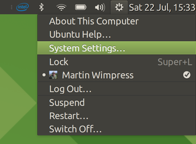

About
This page provides a brief history lesson as to what indicators are and how this project came to be.
What are Indicators anyway?
The panel indicator area was introduced in an early version of GNOME somewhat based on the Microsoft Windows '95 design, as an area dedicated to notifications. It is often called the systray or the notification area.
Prior to Indicators the notification area was difficult for users to interact with, each application behaved differently, were not accessible and were often styled differently.
Indicators migrated the different applets to simple menus, this change provided a more consistent interface and improved the user experience of interacting with panel indicators.
If you are still wondering what the heck Indicators are, this image from Ubuntu MATE should help.

Why Ayatana Indicators?
Canonical announced to discontinuation of Unity on the desktop and mobile devices in April 2017. As Ubuntu shifts its focus to GNOME, which is dropping the panel indicator concept entirely, it is fair assumption that upstream maintainence of application indicators and related technologies will decline or come to end entirely.
There are a number of projects that are already using indicators and/or it's associated libraries such as MATE Desktop, XFCE and Arctica Greeter. The UBports project has also expressed interest. These projects all really like the indicator concept and wish to see it maintained and continued.
To better understand the origins of the project and the goals for the future you can hear it from the Ayatana Indicator project lead, Mike Gabriel, from his Ayatana Indicators talk at DebConf17.
Get Involved!
If this project sounds like something you'd like to be a part of then please contact us or take a look at our roadmap and donate some code!